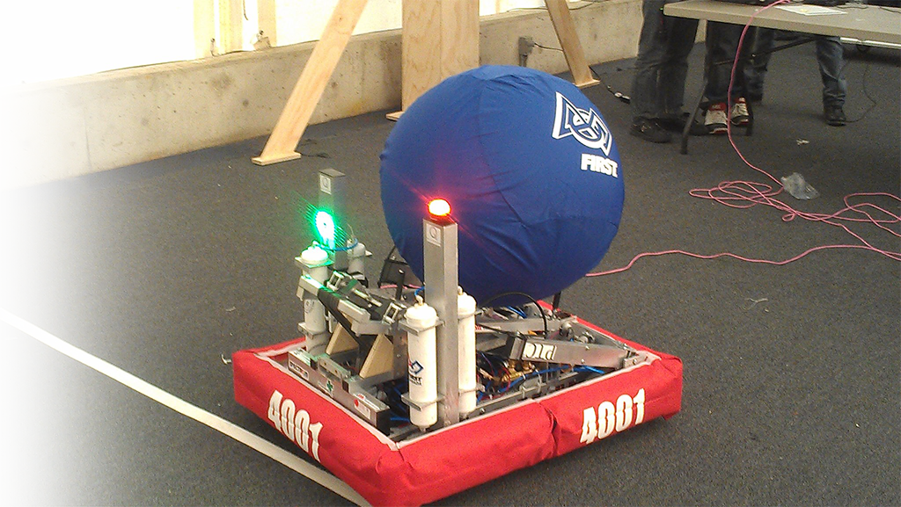

Lead Programmer - FRC 4001 Robotics Team 
September 2013 - June 2014
github.com/FRCTeam4001/2014
This year, thanks to our control system, the robot was able to autonomously make decisions based on the information provided to it by sensors. I implemented sensor fusion, using sensors such as a camera and encoders to determine the robot's location on the playing field. Also, I wrote code for visual processing which allowed the robot to search and find strips of retro reflective tape, and score the greatest number of points in autonomous mode. Finally, the robot used a gyro and proportional-derivative control system to drive in a straight line, even if there was interference from other robots.
- Implemented visual processing, sensor fusion and ladder logic using National Instruments LabView to design autonomous systems for competition robots
- Designed an interface to control the robots, to display critical information on the driver station, and to manage the robots' onboard systems through the use of state machines
- Collaborated with engineers from Quanser, a mechatronics company, to design robotic systems
- Mentored programmers from two other teams
- Organized and managed a First Lego League tournament for 220 participants